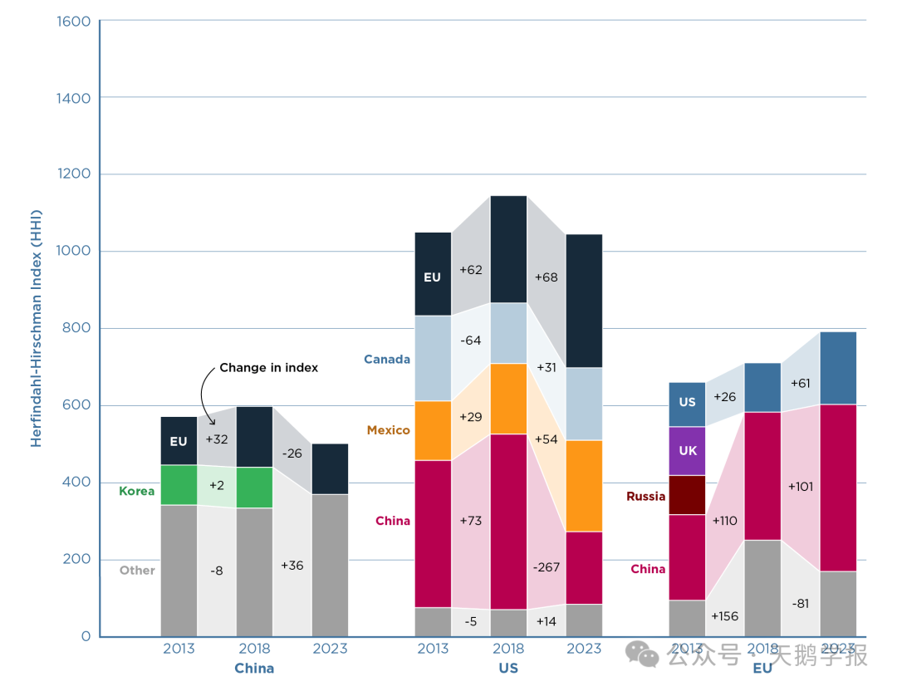
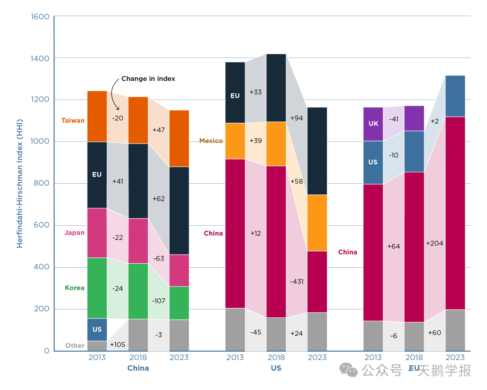
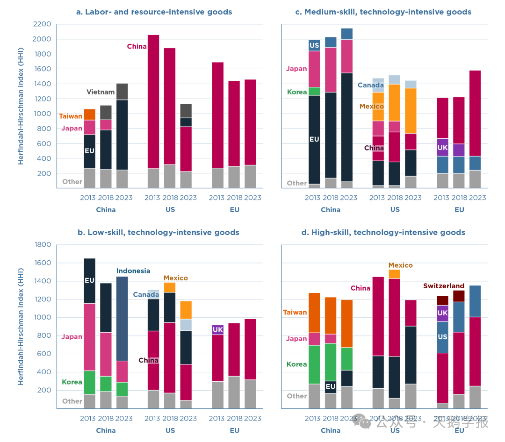

> 十年前最好的朋友现在是否依然是你最好的朋友？
每个人对这个问题的回答不尽相同，但是，对于中国、美国和欧盟三个超级经济体而言，过去十年风云流变，哪些贸易上最紧密的伙伴是否依然保持着往日的融洽？
1945年德国经济学家阿尔伯特·赫希曼（Albert Hirschman）写了一本叫做《国家实力与外贸结构》（National Power and the Structure of International Trade）的书，书中提出的一个核心问题是：一般而言，大炮（权力）和黄油（经济）之间的关系是什么？或者说，对外贸易如何有助于在各国之间进行权力分配。
美国经济学家阿尔伯特·赫希曼（Albert Hirschman，1915-2012）
赫希曼给出的结论清晰明了：贸易关系首先会造成依赖关系，然后彼此影响，由于双方的关系并非完全对称，因此影响的强度也并不必然对等，如果一方对另一方的影响达到一定程度，则可能发展成支配关系。因此，强大的对外贸易有可能增强一国的实力，这种实力体现为“一旦发生贸易中断，其贸易伙伴所收到的伤害要比对自己的伤害大得多”，为了让一国达到这种效果，作者甚至提出了以外贸为手段的强国策略。
但是，让本书产生广泛影响的原因并非这个“战斗力指数”爆棚的学术观点，而是为了证明这个观点所设计的一个衡量一国进出口集中度的指标。他提出的方法有别于当时已有的集中度衡量方法，对规模较大的贸易伙伴赋予了更高的权重，如今市场分析人士大都对HHI指数了如指掌，而其中的第二个”H”就是指的赫希曼。在此基础上，美国经济学家奥利斯·赫芬达尔在其1950年的博士论文《美国钢铁工业的集中度》中重新使用了这种方法，并最终成为衡量一个行业市场结构的基础指标，其计算公式为各公司市场份额的平方和。
具体来说，如果一个市场有n家公司，每家公司的市场份额为，那么，
这个指数不仅可以用于衡量行业集中度，也可以应用于国际贸易领域，评估一国对外贸易的集中程度。
HHI指数的取值范围在0到10000之间，数值越大表示集中度越高。在国际贸易中，HHI指数越高意味着一国的贸易伙伴越集中，可能导致更高的贸易依赖和潜在风险，而HHI指数的下降则预示贸易伙伴多样化提高，客观上可以达到分散风险的效果。2013年以来，中美贸易争端最终升级为贸易战、Covid19大流行病导致的供应链中断让贸易商们仍心有余悸，地缘政治紧张局势让“脱钩”的呼声不绝于耳，贸易联系碎片化的趋势愈演愈烈。
在这种氛围下，赫希曼的理论得以“借尸还魂”，成为很多国家对冲自然供应中断，减少经济胁迫可能性的行为准则，世界上的最大的三个经济体都在推行进口来源多样化政策。赫希曼的理论法则是否让大国们之间的贸易关系更加分散化，我们用赫希曼的指数来一探究竟。
一、整体贸易依存关系

整体进口来源集中度（Lovely and Yan, 2024）
根据Peterson国际经济研究所的两位经济学家Lovely与Yan的计算结果，在三大贸易区中，美国进口来源的多样化程度最低，这意味着根据一种普遍接受的衡量标准，美国进口总额中有较大份额来自较少的来源地。过去的十年，美国的总进口HHI指数一直是三个地区中最高的，其中在2018年达到了历史的峰值：1146。
我们对于这个数值的经济学和现实意义知之甚少。在理论上，如果只和一个国家贸易，那么HHI取值为10000，如果每个贸易伙伴的占比都接近于零，则HHI取值为0。在市场结构分析以及反垄断认定中，1500通常被认为市场竞争程度的分割线（低于1500表示竞争充分，高于1500表示市场集中度较高）。遗憾的是，在国际贸易的场景下，没有这样约定俗成的认定标准，只能通过纵向和横向的比较发现其中的意义。
三大经济体中美国的集中度之所以最高，是因为有四个贸易伙伴在其总进口的比重超过了10%，他们分别是欧盟、加拿大、墨西哥和美国；中国的进口来源最为分散，到2023年，只有欧盟能占据10%以上的份额；欧盟依赖的供应商也多种多样，2023 年，只有两个来源地--美国和中国--提供了欧盟进口总值的 10% 或更多。
中国和美国的进口集中度在2018年至2023年期间有所下降，这是继2013年至2018年期间增长之后的又一次逆转。相比之下，欧洲的集中度在整个10年期间都在上升。美国和中国对欧盟而言变得越来越重要。
二、制成品贸易集中度

制成品的进口来源集中度（Lovely and Yan, 2024）
基于要素禀赋分工的思想，世界上有些商品的来源非常稳定甚至是无法转移，这些商品主要指哪些不可再生的自然资源或者对气候地理条件高度依赖的农产品，如果用考察他们的来源集中度，这些商品的HHI一定远高于制成品。当前广泛流行的“去风险”以及“供应链韧性”等概念也主要指的是制成品。
按照理查德·鲍德温的说法，在制成品贸易上，中国是世界上唯一的超级大国。按照2020年制成品总产出衡量，中国占到了全球的35%，其他超过6%的国家还有五个，他们分别是美国（12%）、日本（6%）、德国（4%）、印度（3%）和韩国（3%）。在过去几年，出于对供应链安全上的考虑，很多国家祭出“中国+1”、“中国+N”的保守论调，那么，时至今日，中国是否依然掌管全球制成品供应链的核心？
首先，与整体进口集中度相比，三大地区的制成品进口集中度要高得多，但是他们的差距在变小。
其次，经过中国贸易战的“洗礼”，中美在互为市场的关系上不再是“双向奔赴”，而是“渐行渐远”。在十年前，美国作为中国的进口来源国还位列TOP5，市场份额超过了10%，但是如今已经退出了争夺。中国在美国市场上的情况也经历了类似的过程，十年前的HHI值高达713，如今已经跌至294，与墨西哥相似，落在了欧盟之后。
第三，中美的采购多样化程度在过去十年走过了相似的路径，多样化程度逐渐提高，但是欧盟的情况刚好相反，市场集中度大为提高。从细分的国别来看，欧盟的进口越来越依赖中国和美国，中国作为欧盟第一大来源地的地位日益稳固，美国对欧盟的重要性十年来“风雨不改”，而英国的“脱欧”已成既定事实。
三、不同技术密集度商品的贸易依存度

不同类型产品的进口来源集中度（Lovely and Yan, 2024）
现代工业的显著特点是制造流程的复杂性，经过全球化3.0的深度整合，制造业已经形成了你中有我、我中有你的精细化分工模式，因此大国之间的依赖关系往往会沿着价值链延伸，更多的秘密隐藏在不同品类商品的贸易关系上。为此，我们需要对制成品贸易做进一步的细分，以破解三大经济体之间的依赖关系。
按照加工程度的不同，联合国贸发会议(UNCTAD)将贸易品分成劳动和资源密集型商品、低技能和技术密集型商品、中等技能和技术密集型商品以及高技能和技术密集型商品商品。
劳动和资源密集型主要包括服装鞋类等轻工业品，是中国传统的优势领域。无论对于美国和欧盟而言，对来自中国的此类商品都具有高度的依赖性，但是过去十年的一个典型趋势是，两个地区都在积极谋求商品来源的多元化，“去中国化”的痕迹明显。尤其是最近五年，从中国进口的这些商品的份额急剧下降，越南和欧盟正在美国市场上替代中国。另外一个值得关注的特点是，虽然十年前美国此类商品的进口高度集中于中国，但是其整体集中度已经低于欧盟，拜登政府所谓的“去风险”策略取得一定成效。欧盟仍然严重依赖从中国进口的劳动和资源密集型产品。
中国的角色也在发生着微妙的变化。中国越来越依赖欧洲进口劳动密集型和资源密集型产品，部分原因是旅游用品、手袋、鞋类和服装等消费品进口的增长。目前，中国这些产品的进口集中度已超过美国，几乎与欧洲持平。而过去的两个主要供应方日本和中国台湾地区正在逐步淡出。
低技能低技术产品主要包括钢铁和加工技术相对简单的运输设备。中国在这类商品上的供应商集中度超过美国和欧盟，韩日作为主要来源国的地位在下降，而欧盟的角色正在被印尼所替代。十年来美国的整体集中度变化不大，但是也存在明显的“去中国化”过程，来自两个近邻加拿大和墨西哥的此类商品份额快速上升，特朗普的美加墨贸易协定或许是背后的重要推动力量。与此相反，欧盟的“中国化”色彩越发浓厚，十年来一直占据最大供应国的角色。
中等技能技术商品主要包含汽车、机床等专用工业机械设备。在此类商品的贸易往来中，中国与欧盟之间的相互依赖程度日益增强。中国对这些产品的进口集中度超过了其他两个地区，对头号供应国欧盟的依赖程度也在增加。同时，由于中国的电机出口激增，包括电动汽车关键的电池和零部件，欧洲的进口集中度在 2018 年至 2023 年期间随着中国份额的大幅增长而加剧。美国中等技能产品的采购略有多样化，中国所占份额大幅下降，墨西哥所占份额上升。
高技能高技术商品处在价值链的顶端，主要由来自发达国家的技术密集商品和来自中等收入国家组装的通讯信息产品（ICT）产品，前者如飞机，后者如手机笔记本电脑数码产品等。在美国市场上，中国和欧盟的角色正在发生转换，来自中国的此类产品急剧下降，而欧盟的份额快速上升。十年以来，中国的整体集中度变化不大，但是其内部结构正在调整，韩日的份额萎缩，欧盟和中国台湾地区的地位有所上升。
四、总结
按照赫希曼的观点，贸易可以成为大国博弈的武器，其威力甚至不输真正。过去十年三大地区贸易结构的变化深刻反映了全球贸易格局的动态演变，其背后也是折射出供应链安全以及贸易多元化的战略调整意图。尽管拜登政府一再敦促欧盟放弃从中国进口商品，但一个不争的事实是，在中美渐行渐远的同时，中国与欧盟的贸易关系更变得日趋紧密。大国的多元化战略使得那些高度融入全球供应链的“小国”成为暂时的受益者。
这些已被识别的端倪和未被识别的暗影预示着大国之间下一个十年的流变。
参考文献： - Mary E. Lovely and Jing Yan，“While the US and China decouple, the EU and China deepen trade dependencies”, Peterson Institute for International Economics, August 27, 2024. - Baldwin, R, R Freeman and A Theodorakopoulos (2022)，"Horses for Courses：Measuring Foreign Supply Chain Exposure", NBER Working Paper w31820. - Richard Baldwin, "China is the world’s sole manufacturing superpower: A line sketch of the rise," VoxEU, Centre for Economic Policy Research, January 17, 2024.